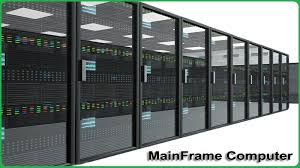

1. Supercomputers
A supercomputer is a high-performance computing (HPC) system that leads the world in terms of processing power and speed.
It is designed to handle extremely complex and data-intensive tasks that are beyond the capabilities of conventional computers.
Here's a detailed explanation:
Key Characteristics of Supercomputers
-
High Computational Speed:
Supercomputers execute trillions of calculations per second,
often measured in FLOPS (Floating-Point Operations Per Second).
-
Massive Parallelism:
They consist of thousands to millions of processors working simultaneously to solve
problems.
-
Specialized Architecture:
Their architecture is optimized for intensive computational tasks,
with high-speed interconnects and memory bandwidth.
-
Large Storage Capacity:
Supercomputers handle vast amounts of data with sophisticated storage systems.
-
Custom Software:
They run highly specialized software for tasks like simulations, data analysis, and scientific modeling.
Applications of Supercomputers
-
Scientific Research
-
Weather Forecasting:Predicting weather patterns and climate change using simulations.
-
Astronomy:
Simulating the universe, analyzing cosmic phenomena.
-
Physics:
Particle simulations (e.g., Large Hadron Collider experiments).
-
Engineering
-
Aerospace:
Designing aircraft and spacecraft through simulations.
-
Automotive:
Crash testing and aerodynamic simulations.
-
Medicine and Healthcare
-
Drug Discovery:
Modeling molecular interactions for new drug development.
-
Genomics:
Analyzing DNA sequences for research and personalized medicine.
-
Artificial Intelligence and Machine Learning
-
Training large-scale models for AI applications, such as GPT models.
-
Defense and Security
-
Simulating nuclear tests and analyzing cybersecurity threats.
Examples of Modern Supercomputers
Frontier (USA),Fugaku (Japan),Summit (USA),Tianhe-3 (China)
2. Mainframe Computers
A mainframe computer is a powerful system designed to handle and process large-scale business operations and massive amounts of data.
They are known for their reliability, scalability, and ability to support thousands of users simultaneously.
Here's a detailed explanation:
Key Characteristics of Mainframe Computers
-
High Reliability:
Known for their fault tolerance and minimal downtime.
-
Massive Storage:
Capable of managing vast amounts of data for enterprises.
-
Multi-User Capability:
Support for thousands of concurrent users and applications.
-
Advanced Security:
Designed with robust security protocols for sensitive data.
-
Custom Operating Systems:
Use specialized operating systems like z/OS.
Applications of Mainframe Computers
-
Banking and Finance
- Transaction Processing: Managing millions of financial transactions daily.
- Data Analysis: Real-time processing of financial data.
-
Government and Public Sector
- Tax Systems: Handling vast amounts of taxpayer data.
- Census Data: Storing and analyzing demographic information.
-
Retail
- Inventory Management: Tracking large-scale inventories in real time.
-
Healthcare
- Patient Records: Managing and analyzing health data securely.
Examples of Modern Mainframe Computers
IBM z15, Unisys ClearPath Forward, Hitachi AP10000

3. Personal Computers
A personal computer (PC) is a general-purpose computer designed for individual use.
PCs are versatile and used for a wide range of tasks, from word processing to gaming.
Here's a detailed explanation:
Key Characteristics of Personal Computers
- Affordable: Cost-effective solutions for personal and small business use.
- Customizable: Easily upgradable hardware and software.
- Wide Compatibility: Supports a variety of software and hardware peripherals.
- User-Friendly: Intuitive interfaces for everyday users.
- Portable Options: Laptops, notebooks, and tablets are portable versions of PCs.
Applications of Personal Computers
-
Education
- E-Learning: Accessing online courses and educational resources.
-
Business
- Office Tasks: Word processing, spreadsheets, and presentations.
-
Entertainment
- Gaming: Playing video games with advanced graphics.
- Streaming: Watching movies and TV shows online.
-
Personal Productivity
- Budgeting: Managing personal finances using software.
Examples of Modern Personal Computers
Dell XPS, Apple MacBook, HP Spectre
4. Workstations
A workstation is a high-performance computer designed for professional use in technical, engineering, and scientific fields.
They are optimized for heavy computational tasks and graphical processing.
Here's a detailed explanation:
Key Characteristics of Workstations
- High-Performance Hardware: Equipped with powerful CPUs and GPUs.
- Multitasking Capability: Designed to run multiple resource-intensive applications simultaneously.
- Enhanced Reliability: Robust hardware for critical tasks.
- Specialized Software: Supports professional-grade software like CAD, 3D rendering, and simulations.
- Extensive Connectivity: Multiple ports for peripherals and network connections.
Applications of Workstations
-
Engineering and Design
- CAD: Creating architectural and engineering designs.
- 3D Modeling: Rendering animations and models.
-
Media and Entertainment
- Video Editing: Processing high-resolution video files.
-
Scientific Research
- Simulations: Running complex simulations for research.
Examples of Modern Workstations
HP Z8 G4, Dell Precision 7920, Lenovo ThinkStation P920